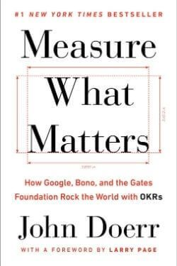

Library › Business & Startups
Measure What Matters — Summary & Key Lessons

How Google, Bono, and the Gates Foundation rock the world with OKRs — the goal system that turns ambition into execution.
📖 OPEN THE FULL INTERACTIVE BREAKDOWN →🌐 Read it in Hindi, Hinglish, Gujarati, Tamil & 22 more languages — free, with audio.
💡 The Big Idea
John Doerr walked into a 40-person startup called Google in 1999 and taught them the system he'd learned from Andy Grove at Intel: OKRs. An OBJECTIVE is WHAT you want accomplished — significant, concrete, inspirational ('win the developer market'). KEY RESULTS are HOW you'll know you got there — 3-5 specific, measurable, time-bound, verifiable outcomes ('ship v2 by June 30,' '10,000 weekly active developers by Q3') — you either hit the number or you don't; no judgment calls, no 'basically done.' The system's four superpowers: FOCUS (choosing 3-5 objectives means saying no to everything else), ALIGNMENT (everyone's OKRs are public — from CEO down — so all work visibly connects), TRACKING (scored quarterly, graded honestly, revised when reality changes), and STRETCH (Google's '10x gospel': set goals where 70% achievement is success, because aiming for miracles and 'failing' beats aiming for mediocrity and succeeding). Paired with CFRs (Conversations, Feedback, Recognition) replacing dead annual reviews. The engine behind Google's discipline, the Gates Foundation's billions deployed, and Bono's campaigns — the same tool, from 40 people to 140,000.
🧠 The 6 Key Lessons
Lesson 1: The OKR Anatomy: Objectives Inspire, Key Results Verify
Chapters 1-3: Google, Meet OKRs
The two halves do different jobs and die without each other. The OBJECTIVE is the direction and the fire — qualitative, ambitious, memorable enough to survive a hallway ('Own the small-business market'). KEY RESULTS are the proof — 3 to 5 measurable outcomes with numbers and deadlines, defined so a stranger could grade them ('Onboard 500 SMB accounts by March 31,' 'Reduce churn from 8% to 4%'). Grove's test, which Doerr carries everywhere: it must be 'so soberly measurable that when you're done, you can look at it and say, without arguments: did I do that or did I not? Yes? No? Simple.' The classic failure modes: objectives without key results (inspiration with no scoreboard — 'be customer-obsessed'), key results without objectives (a metrics soup with no story), activities disguised as results ('launch the campaign' measures effort; 'campaign generates 2,000 qualified leads' measures OUTCOME), and the fatal one — too many OKRs, which is the same as none. Less is more: 3-5 objectives, 3-5 key results each, per quarter. If everything is a priority, nothing is.
📖 Example: Doerr's founding demo: in 1975 at Intel, Andy Grove's own OKR system confronted a crisis — Motorola's 68000 chip was beating Intel's 8086 in design wins. Grove launched Operation Crush with one company-wide objective and cascading key results; within months,… Read the full example →
⚡ Do this: Write ONE personal OKR for this quarter right now: an objective that excites you stated in one line, plus exactly three key results a stranger could verify with a yes/no on the deadline date. Delete every 'try,' 'improve,' and 'work on' — numbers and dates only.
Lesson 2: Alignment in the Open: Everyone Sees Everyone's Goals
Chapters 7-9: The Superpower of Alignment
In most companies, goals are secrets: annual, private, political, stale within weeks. Research Doerr cites found only 7% of employees fully understand their company's strategy and what's expected of them to help achieve it. OKRs invert this: EVERY person's OKRs — including the CEO's — are visible to EVERYONE, by design. The effects compound: work connects visibly to the mission (the intern can trace her key results to the company objective in two clicks); duplicated effort surfaces instantly (two teams building the same tool find out in week one, not at launch); cross-team dependencies get negotiated upfront; and sandbagging dies of daylight — you can't quietly maintain soft goals when peers see your numbers. Crucially, alignment isn't pure cascade: roughly half of OKRs should originate BOTTOM-UP, from the people closest to the work — pure top-down cascading is slow, demotivating, and blinds the org to frontline insight. Aligned doesn't mean identical; it means visibly CONNECTED.
📖 Example: The book's most charming case: Google's founders' driving force met its match at Intuit, where CIO Atticus Tysen deployed open OKRs across 600 IT staff during the company's hardest transition (desktop software → cloud). The revelation wasn't the goals… Read the full example →
⚡ Do this: Make your goals public this week at whatever scale you have: share your quarterly OKRs with your team, cofounder, or accountability partner — and ask to see theirs. If you lead people, publish yours FIRST, including one honest 'at-risk' key result.
Lesson 3: Stretch Goals: The Gospel of 10x
Chapters 12-14: The Superpower of Stretch
Doerr splits OKRs into two families — and confusing them wrecks the system. COMMITTED OKRs are promises: sales targets, launches, hiring — expected score 100%, failure requires escalation and postmortem. ASPIRATIONAL (stretch) OKRs are moonshots: expected score around 70%, and that's SUCCESS — because the entire point is that aiming at 10x and reaching 7x beats aiming at 10% and hitting it. The psychology is Larry Page's: 'If you set a crazy, ambitious goal and miss it, you'll still achieve something remarkable' — and stretch goals force the redesign conversations that incremental goals never trigger (you can hit +10% by working harder; +1000% requires rethinking the whole approach — which is where breakthroughs live). The cultural prerequisite is psychological safety: stretch scoring only works where a 0.7 on a moonshot is celebrated and never punished — grade OKRs into compensation and people will sandbag every number by Friday. Separate the scoreboard from the paycheck.
📖 Example: Gmail: the internal storage debate was between 2MB and 4MB of free email storage (competitors offered 2-4MB; users deleted messages constantly to stay under). Larry Page kept rejecting the specs — and launched Gmail in 2004 with ONE GIGABYTE: 250-500x the… Read the full example →
⚡ Do this: Take your most important current goal and write its 10x version ('100 customers' → '1,000'). Spend 30 minutes on one question: what would have to be TRUE about my approach for the 10x number to be possible? Steal the best structural idea that emerges — even if you keep the 1x target.
Lesson 4: CFRs: The System That Replaces the Annual Review
Chapters 15-16: Continuous Performance Management
OKRs handle the WHAT; CFRs handle the HOW-ARE-WE-DOING — and Doerr argues the annual performance review deserves its ongoing extinction: it's backward-looking, recency-biased, politically warped, universally dreaded, and delivers feedback months after it could have helped. The replacement is continuous: CONVERSATIONS — regular, structured one-on-ones (goal-setting, progress check-ins, growth discussions) where the employee sets the agenda and the manager's job is listening and unblocking; FEEDBACK — specific, bidirectional, and close to the event ('here's what I saw Tuesday' beats 'you sometimes tend to...' in December); RECOGNITION — frequent, peer-to-peer, tied to company values and actual key results rather than tenure or theater. The mechanism matters because OKRs without CFRs decay into surveillance ('why is your number yellow?'), while CFRs give the numbers a human context ('what's blocking you, and what do you need?'). Doerr's formula: OKRs are the scoreboard; CFRs are the coaching. A scoreboard without coaching is just pressure with better fonts.
📖 Example: Adobe, 2012: exit interviews revealed the annual review itself — rankings, stack comparisons, February anxiety season — was a top driver of the company's talent exodus, costing an estimated 80,000 manager-hours (the equivalent of 40 full-time staff doing… Read the full example →
⚡ Do this: Replace one review-style relationship with a CFR cadence: book a recurring 30-minute weekly/biweekly 1:1 (with your report, manager, or accountability partner) with a fixed micro-agenda — progress on key results, one piece of specific feedback each way, one blocker to remove. No status theater; no waiting for December.
Lesson 5: The OKR Cadence: Weekly, Monthly, Quarterly — Rhythm Beats Motivation
Part 3: The Rhythm
Doerr's implementation detail that makes or breaks OKRs: they aren't set-and-forget — they run on a cadence. Quarterly OKRs are reviewed weekly (brief check-ins on progress), scored monthly, and re-evaluated quarterly. The rhythm matters more than the ambition, because OKRs work by creating a recurring conversation about priorities — the weekly check-in is where alignment and course-correction actually happen. Without the cadence, OKRs become a dusty document; with it, they become the company's heartbeat. Doerr's rule: if you're not ready to commit to the review rhythm, don't start the OKR program at all — a half-run OKR cycle is worse than none, because it trains people to ignore goals.
📖 Example: Doerr describes how Google's OKR discipline — the weekly check-ins, the quarterly scoring, the transparent dashboards — turned goal-setting from an annual HR ritual into a live operating system. Teams knew their numbers weekly, not annually, which is why the… Read the full example →
⚡ Do this: If you set goals, add a fixed weekly 15-minute review slot to your calendar this month — progress, blockers, next action. The cadence is the machine.
Lesson 6: OKRs Are Not the Only Thing: The 60/40 Rule and the Everyday Work
Part 4: The Balance
Doerr's correction to the 'OKRs for everything' mistake: OKRs should cover only the important, priority work — roughly 60% of your team's capacity at most. The remaining 40% is the daily operational work (BUsiness As Usual — BAU) that keeps the lights on but doesn't need a goal attached. Teams that try to make every task an OKR end up with bureaucratic goal-tracking that nobody trusts. The art is knowing which work deserves a key result and which work just needs to get done. OKRs are the telescope for the few things that matter; they are not a microscope for everything. Protect the balance or the system collapses under its own weight.
📖 Example: Doerr notes that teams at Google and Intel were explicitly told OKRs cover the priorities, not the entirety of work — the daily engineering, support and maintenance continues outside the OKR framework. The discipline of saying 'this is BAU, not an OKR' is… Read the full example →
⚡ Do this: List your current top 5 work activities. Mark which ones genuinely deserve OKRs (the priorities) and which are BAU. Commit to OKRs for only the first group.
✅ 5-Step Action Plan
- Set 3-5 quarterly OKRs max — one line objectives, 3 verifiable key results each; kill the rest of the list.
- Publish your OKRs to your team/partner and review scores openly every quarter — grade honestly, revise freely.
- Split committed (100% expected) from aspirational (70% = success) goals — and never punish a well-aimed miss.
- Write the 10x version of your top goal and harvest its structural ideas, even if you ship the 1x.
- Replace annual verdicts with weekly CFR conversations: progress, feedback both ways, one blocker removed.
💬 Best Quotes from Measure What Matters
- “Ideas are easy. Execution is everything.”
- “If you try to focus on everything, you focus on nothing.”
- “It almost doesn't matter what you know. Execution is what matters most.”
Interactive version: mark lessons as read, listen in your language, share quote cards.